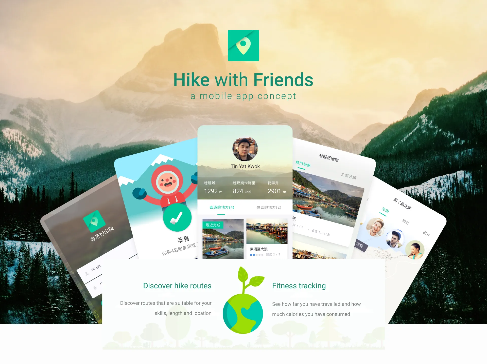
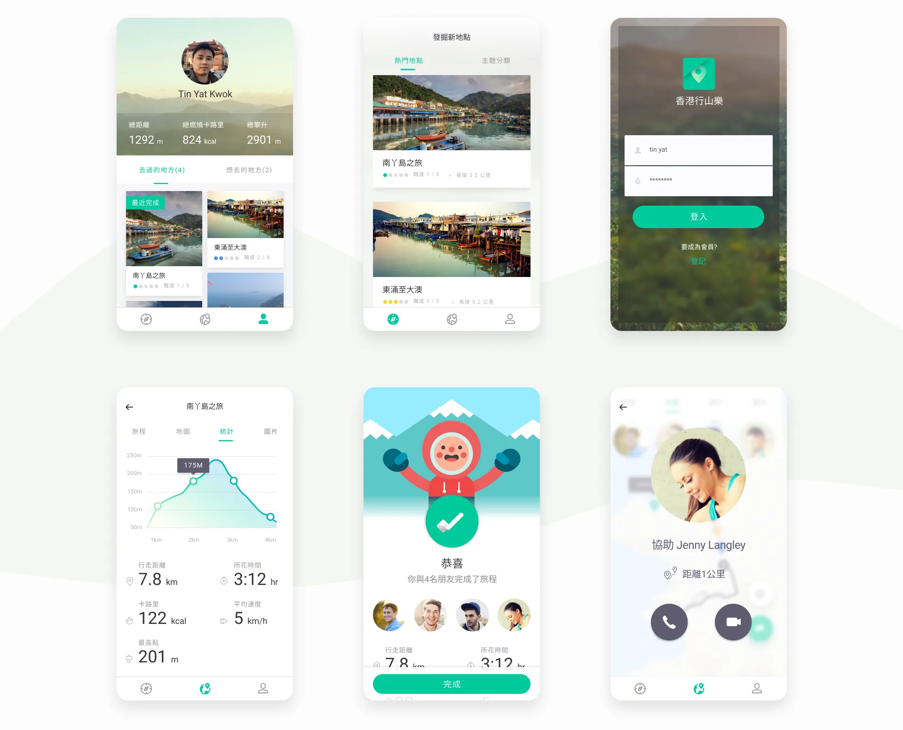
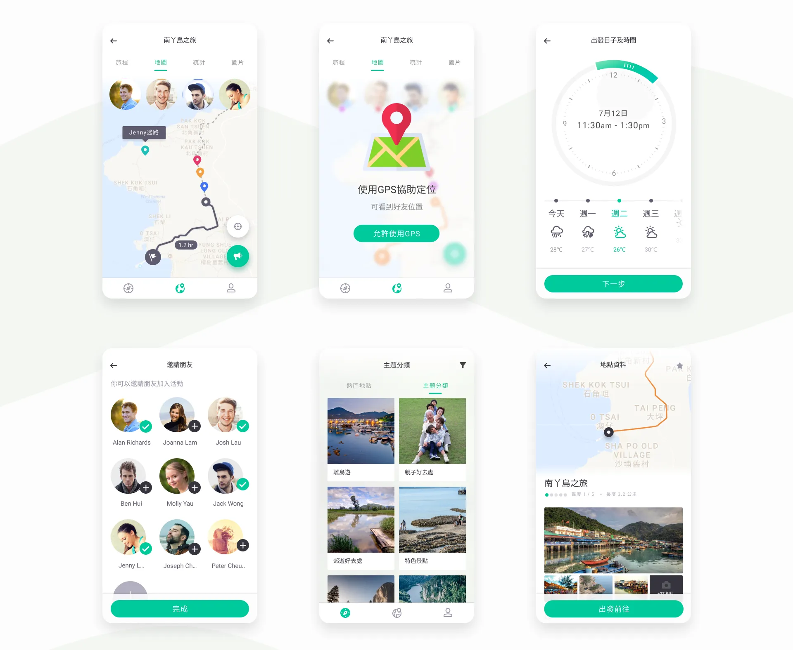
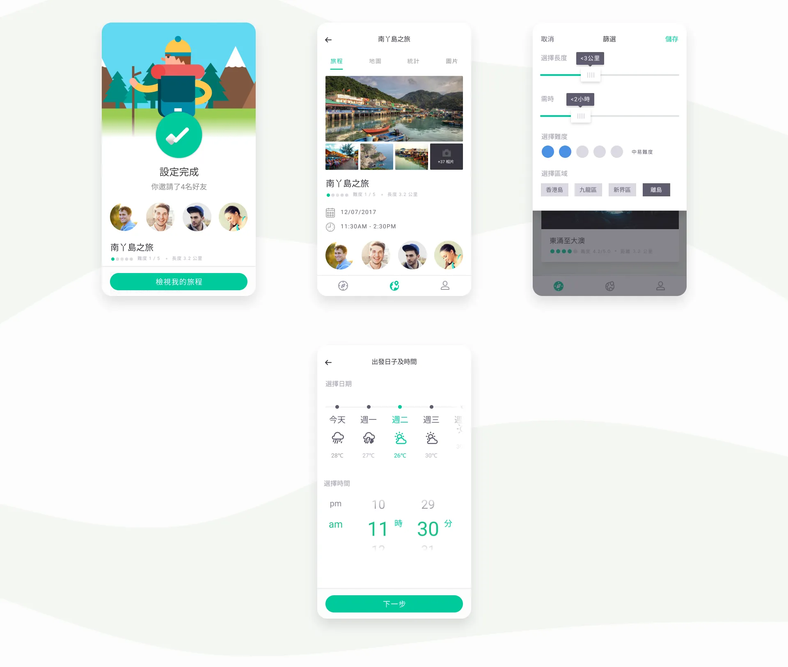

App Screens
A collection of screens designed for the hiking app concept, showcasing trail discovery, route planning, and outdoor adventure features.




Design Process
Explore the design process behind the hiking app concept, including prototype demonstrations and interactive mockups.
Design Process Video
Key Features
- Trail discovery with detailed information and difficulty ratings
- Interactive route planning and navigation tools
- Offline maps for remote hiking locations
- Community features for sharing trails and experiences
- Weather integration for safe hiking conditions